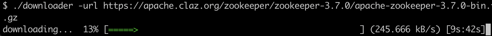

Go项目实战：一步步构建一个并发文件下载器
大家好，我是 polarisxu。
今天为大家带来一个实战项目。建议你一定要动手实践。
在往下看之前，你不妨思考下，用 Go 如何实现一个并发下载器。（我之前有推荐过一个类似的开源项目：推荐三个Go实战开源项目 ）
01 原理
对于服务器上的某个文件，我们要并发下载到本地，很容易想到，应该将文件分成多个部分，然后开多个 goroutine 并发地去下载，最后将这多个部分合并成一个文件，实现并发下载的目的。
现在的问题是，服务器上的一个文件，我们怎么做到分成多个呢？
这需要 HTTP 协议相关知识了。
HTTP 协议有一个响应头：Accept-Ranges，服务器通过该头来标识自身支持部分请求（partial requests），也叫范围请求。如果服务端支持部分请求，我们就可以实现并发下载。该头有两个可能的值：
Accept-Ranges: bytes
Accept-Ranges: none
- none：不支持任何部分请求单位，由于其等同于没有返回此头部，因此很少使用。不过一些浏览器，比如 IE9，会依据该头部去禁用或者移除下载管理器的暂停按钮。
- bytes：部分请求的单位是 bytes （字节）。
所以，我们在并发下载之前，应该先发起一个 Head 请求，来确认服务端是否支持部分请求。比如：
resp, err := http.Head("https://studygolang.com/dl/golang/go1.16.5.src.tar.gz")
if err != nil {
return err
}
if resp.StatusCode == http.StatusOK && resp.Header.Get("Accept-Ranges") == "bytes" {
// 支持部分请求
}
确认了服务器支持部分请求，接下来就是如何进行部分请求。
这就用到 HTTP 的一个请求头部：Range。（详情参考：https://developer.mozilla.org/zh-CN/docs/Web/HTTP/Headers/Range ）
Range 告知服务器返回文件的哪一部分。在一个 Range 头部中，可以一次性请求多个部分，服务器会以 multipart 文件的形式将其返回。如果服务器返回的是范围响应，需要使用 206 Partial Content 状态码。假如所请求的范围不合法，那么服务器会返回 416 Range Not Satisfiable 状态码，表示客户端错误。服务器允许忽略 Range 首部，从而返回整个文件，状态码用 200。
具体语法：
Range: <unit>=<range-start>-
Range: <unit>=<range-start>-<range-end>
Range: <unit>=<range-start>-<range-end>, <range-start>-<range-end>
Range: <unit>=<range-start>-<range-end>, <range-start>-<range-end>, <range-start>-<range-end>
-
<unit>范围所采用的单位，通常是字节（bytes）。
-
<range-start>一个整数，表示在特定单位下，范围的起始值。
-
<range-end>一个整数，表示在特定单位下，范围的结束值。这个值是可选的，如果不存在，表示此范围一直延伸到文档结束。
例如：
Range: bytes=200-1000, 2000-6576, 19000-
掌握了以上知识点，最后要做的就是将下载下来的各个部分合并成一个文件。需要注意各个部分的顺序，比如根据顺序，按 1、2、3 等编号。
02 动手实现一个
知道了原理不代表你真的就会了，我们应该实际动手实现一个，加深理解。
在本地某个目录下创建目录：downloader。
$ mkdir downloader
$ cd downloader
$ go mod init github.com/polaris1119/downloader
命令行参数控制
为了让工具更好用，我们应该支持命令行参数，而不是代码写死一个，比如要下载的 URL、并发数、输出的文件名等。关于命令行参数控制，除了使用标准库 flag，我比较喜欢 github.com/urfave/cli，最新版本 v2。
创建一个文件 main.go，内容如下：
package main
import (
"log"
"os"
"runtime"
"github.com/urfave/cli/v2"
)
func main() {
// 默认并发数
concurrencyN := runtime.NumCPU()
app := &cli.App{
Name: "downloader",
Usage: "File concurrency downloader",
Flags: []cli.Flag{
&cli.StringFlag{
Name: "url",
Aliases: []string{"u"},
Usage: "`URL` to download",
Required: true,
},
&cli.StringFlag{
Name: "output",
Aliases: []string{"o"},
Usage: "Output `filename`",
},
&cli.IntFlag{
Name: "concurrency",
Aliases: []string{"n"},
Value: concurrencyN,
Usage: "Concurrency `number`",
},
},
Action: func(c *cli.Context) error {
return nil
},
}
err := app.Run(os.Args)
if err != nil {
log.Fatal(err)
}
}
执行 go mod tidy，下载必要的包。然后执行：
$ go run main.go -h
NAME:
downloader - File concurrency downloader
USAGE:
downloader [global options] command [command options] [arguments...]
COMMANDS:
help, h Shows a list of commands or help for one command
GLOBAL OPTIONS:
--url URL, -u URL URL to download
--output filename, -o filename Output filename
--concurrency number, -n number Concurrency number (default: 8)
--help, -h show help (default: false)
关于 cli 这个库的使用，可以参阅官方文档，写的很详细，也有很多例子。
检查是否支持并发下载
创建另外一个文件 downloader.go，定义一个结构体 Dowloader：
package main
type Downloader struct {
concurrency int
}
func NewDownloader(concurrency int) *Downloader {
return &Downloader{concurrency: concurrency}
}
为该结构体增加 Download 方法：
func (d *Downloader) Download(strURL, filename string) error {
if filename == "" {
filename = path.Base(strURL)
}
resp, err := http.Head(strURL)
if err != nil {
return err
}
if resp.StatusCode == http.StatusOK && resp.Header.Get("Accept-Ranges") == "bytes" {
return d.multiDownload(strURL, filename, int(resp.ContentLength))
}
return d.singleDownload(strURL, filename)
}
func (d *Downloader) multiDownload(strURL, filename string, contentLen int) error {
return nil
}
func (d *Downloader) singleDownload(strURL, filename string) error {
return nil
}
- 通过 Head 请求，判断是否支持部分请求。在原理部分已经讲解；
- 如果不支持，就直接下载整个文件；
当支持部分请求时，文件总大小通过 Head 请求的响应中的 ContentLength 可以获得。有了文件总大小和并发数，就可以知道每个部分的大小了。
并发下载
这部分第一个要点是如何发起部分请求：
req, err := http.NewRequest("GET", "https://apache.claz.org/zookeeper/zookeeper-3.7.0/apache-zookeeper-3.7.0-bin.tar.gz", nil)
if err != nil {
return err
}
rangeStart := 2000
rangeStop := 3000
req.Header.Set("Range", fmt.Sprintf("bytes=%d-%d", rangeStart, rangeStop))
res, err := http.DefaultClient.Do(req)
我们可以将其封装成一个方法：
func (d *Downloader) downloadPartial(strURL, filename string, rangeStart, rangeEnd, i int) {
if rangeStart >= rangeEnd {
return
}
req, err := http.NewRequest("GET", strURL, nil)
if err != nil {
log.Fatal(err)
}
req.Header.Set("Range", fmt.Sprintf("bytes=%d-%d", rangeStart, rangeEnd))
resp, err := http.DefaultClient.Do(req)
if err != nil {
log.Fatal(err)
}
defer resp.Body.Close()
flags := os.O_CREATE | os.O_WRONLY
partFile, err := os.OpenFile(d.getPartFilename(filename, i), flags, 0666)
if err != nil {
log.Fatal(err)
}
defer partFile.Close()
buf := make([]byte, 32*1024)
_, err = io.CopyBuffer(partFile, resp.Body, buf)
if err != nil {
if err == io.EOF {
return
}
log.Fatal(err)
}
}
// getPartDir 部分文件存放的目录
func (d *Downloader) getPartDir(filename string) string {
return strings.SplitN(filename, ".", 2)[0]
}
// getPartFilename 构造部分文件的名字
func (d *Downloader) getPartFilename(filename string, partNum int) string {
partDir := d.getPartDir(filename)
return fmt.Sprintf("%s/%s-%d", partDir, filename, partNum)
}
- 通过发起 Range 请求后，将请求的内容写入本地文件中；
- 为了方便后续合并，文件名加上了序号，这就是 downloadPartial 最后一个参数的作用；
- rangeStart 和 rangeEnd 分别表示 Range 的开始和结束；
然后就是 multiDownload 方法中怎么分部分，这和并发请求多个 URL 很类似，使用 sync.WaitGroup 进行控制：
func (d *Downloader) multiDownload(strURL, filename string, contentLen int) error {
partSize := contentLen / d.concurrency
// 创建部分文件的存放目录
partDir := d.getPartDir(filename)
os.Mkdir(partDir, 0777)
defer os.RemoveAll(partDir)
var wg sync.WaitGroup
wg.Add(d.concurrency)
rangeStart := 0
for i := 0; i < d.concurrency; i++ {
// 并发请求
go func(i, rangeStart int) {
defer wg.Done()
rangeEnd := rangeStart + partSize
// 最后一部分，总长度不能超过 ContentLength
if i == d.concurrency-1 {
rangeEnd = contentLen
}
d.downloadPartial(strURL, filename, rangeStart, rangeEnd, i)
}(i, rangeStart)
rangeStart += partSize + 1
}
wg.Wait()
// 合并文件
d.merge(filename)
return nil
}
func (d *Downloader) merge(filename string) error {
return nil
}
- 计算出每个部分的大小；
- 通过 sync.WaitGroup 协调并发请求；
- 注意每个部分的 rangeStart 和 rangeEnd 的计算规则，特别注意最后一部分；
- 所有部分都请求完成后，需要进行合并；
因为把每部分单独保存为文件了，所以合并只需要按照顺序处理这些文件即可：
func (d *Downloader) merge(filename string) error {
destFile, err := os.OpenFile(filename, os.O_CREATE|os.O_WRONLY, 0666)
if err != nil {
return err
}
defer destFile.Close()
for i := 0; i < d.concurrency; i++ {
partFileName := d.getPartFilename(filename, i)
partFile, err := os.Open(partFileName)
if err != nil {
return err
}
io.Copy(destFile, partFile)
partFile.Close()
os.Remove(partFileName)
}
return nil
}
连接程序
到这里，程序的核心部分已经完成。接下来该在 main.go 中的 Action 作如下处理：
Action: func(c *cli.Context) error {
strURL := c.String("url")
filename := c.String("output")
concurrency := c.Int("concurrency")
return NewDownloader(concurrency).Download(strURL, filename)
},
到这里可以运行测试下：
go run . --url https://apache.claz.org/zookeeper/zookeeper-3.7.0/apache-zookeeper-3.7.0-bin.tar.gz
不出意外的话文件会下载成功。
03 总结
实现了基本功能，读者朋友们可以进一步做优化、完善。比如：
- 看到下载过程，体验更友好，可以加入 github.com/schollz/progressbar 库；
- 可以暂停下载，然后继续下载。即断点续传；
- 不支持并发下载的，支持单个下载，即完成 singleDownload 方法；
类似下面这样：

这个实现的完整代码我放在了 GitHub：https://github.com/polaris1119/downloader 。
还有两点大家可以注意下：
- 并发下载并不一定总是比简单下载快，一般文件越大，并发下载的优势才能体现。不过，并发下载可以端点续传；
- 并发下载可以进一步优化，毕竟写文件，再打开文件合并，是需要时间的；
最后，再提醒一次，记得自己动手实现一个哦。